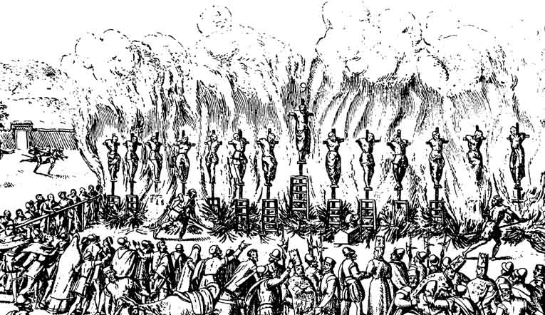

O Malleus Maleficarum
A recepção do tipo penal compósito de bruxaria no Atlântico colonial brasileiro (Bahia quinhentista e Minas setecentista).
O tratado de 1487 fundiu o desvio de fé à magia material. Mas ao cruzar o Atlântico, como a feitiçaria se reconfigurou em comércio, cura e resistência processual?
Tipo Compósito
Institoris funde maleficium concreto, heresia, demonolatria, lendas de voo e pacto diabólico em uma figura penal de exceção focada no corpo e gênero feminino.
Hegemonia Incompleta
Ausência de tribunais permanentes abre fissuras: a bruxaria se fragmenta em redes de feitiçaria mercantil, práticas sincréticas de cura e confissões seletivas na mesa inquisitorial.
A tese: o tipo penal compósito europeu do Malleus sofreu deformações estruturais ao circular pelo espaço atlântico, adaptando-se a lógicas de sobrevivência colonial.
| Réu / Ré | Processo | Ano | Crime Inquisitorial | Estatuto Social | Sentença do Santo Ofício |
|---|---|---|---|---|---|
| Pero de C. Tourinho | 8821 | 1547 | Blasfêmias e heresias | Governador Donatário | Fiança; proibição de retorno |
| Filipa de Sousa | 1267 | 1591 | Sodomia feminina | Costureira, degredada | Açoitamento, vela e degredo |
| Maria G. Cajada | 10748 | 1591 | Feitiçaria diabólica | Degredada de Estremoz | Penitências, degredo e exílio |
| Ana Rodrigues | 12142 | 1593 | Criptojudaísmo | Cristã-nova, viúva, 80 anos | Morte no cárcere; ossos queimados |
| Simão (Congo) | C.P. | 1685 | Morte por feitiço | Africano forro, Recôncavo | Absolvido por falta de provas |
| Luzia Pinta | 252 | 1739 | Bruxaria e calundus | Preta forra, angolana | Abjuração e 4 anos de degredo |

Malleus Maleficarum
Edição de Colônia, 1520. Sistematização do tipo penal compósito e regras processuais.

Auto da Fé
Valladolid, 1559. A encenação pública da justiça inquisitorial hegemônica.

Planisfério de Cantino
1502. O oceano como rota de degredo e tráfego de práticas mágicas sincréticas.
Acesse o portal para ler o artigo científico completo (ABNT) de 10 páginas, baixar as transcrições das fontes da Torre do Tombo e acessar a apresentação completa do Canva.
 aponte a câmera
aponte a câmera